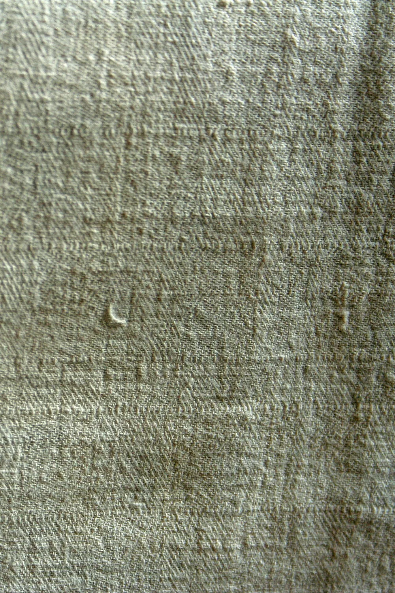
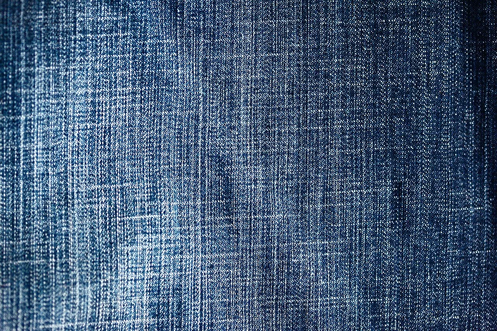
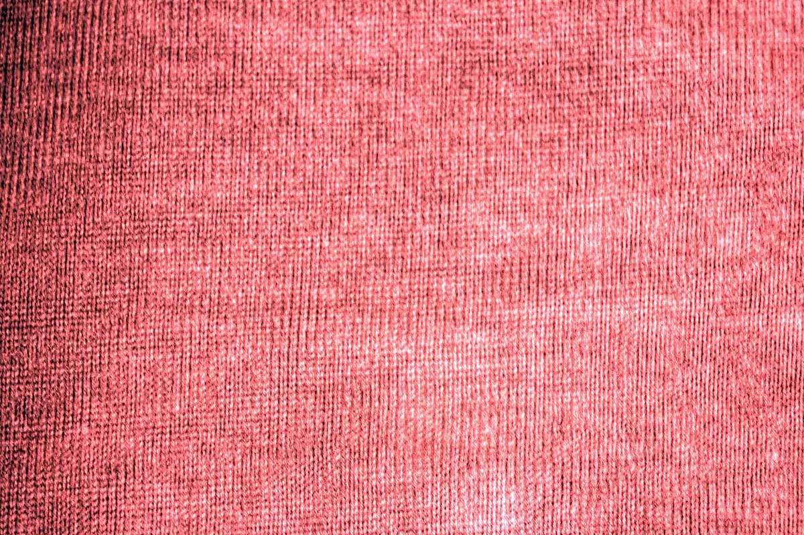
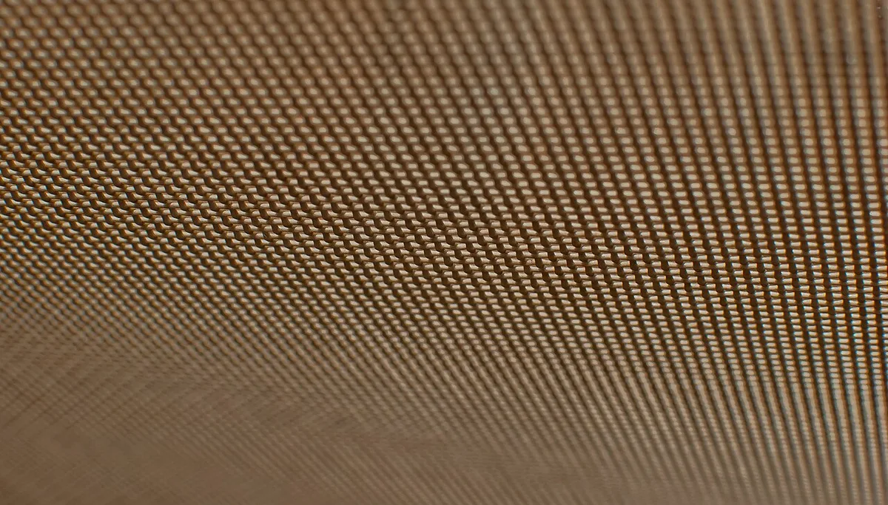
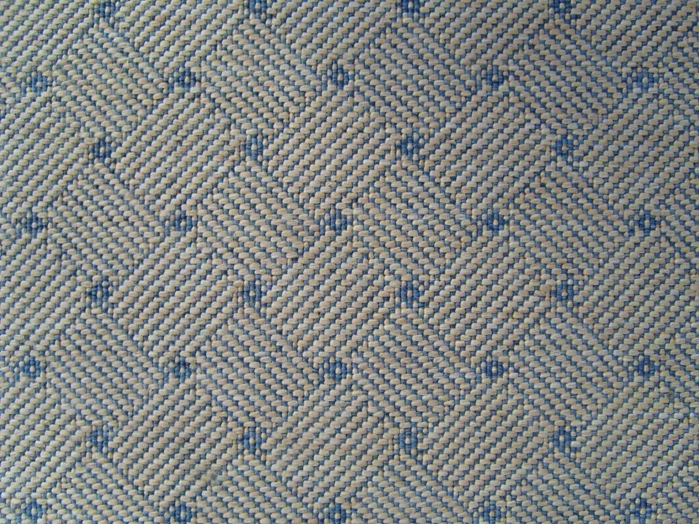
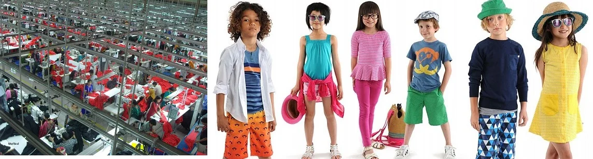

100% Cotton
Cotton Weaves
Plain, twill, poplin, and oxford weaves for shirting, uniforms, bedding, and casual wear.
Fabric Library
Each fabric below represents a material category Mantrix actively quotes for buyers across the GCC, South Asia, Africa, and Europe. Explore the textures below and share your specifications with our team.
Plain, twill, poplin, and oxford weaves for shirting, uniforms, bedding, and casual wear.
Lustrous, lightweight blends suited to formalwear, scarves, linings, and luxury packaging.

Breathable natural fibers ideal for resort wear, summer suiting, and home textiles.

Mid-weight to heavy-weight denim for jeans, jackets, workwear, and rugged uniforms.

Roll-dyed materials in saturated colours for fashion brands and uniform programs.

Sportswear mesh, lining nets, and technical fabrics for activewear and athleisure lines.

Patterned and ornamental fabrics for abayas, evening wear, upholstery, and home décor.
Curated stocklot opportunities for traders and wholesalers seeking volume at sharp pricing.
Ready-Made Garments
Beyond raw fabric, Mantrix coordinates ready-made garment supply across multiple categories — from basic essentials to seasonal collections and uniform programs.
Formal shirts, casual shirts, polos, and t-shirts in cotton, linen, and blends.
Dresses, blouses, abayas, scarves, and modest-wear collections for regional buyers.
Soft-touch cotton wear, school uniforms, and seasonal essentials in volume.
Industrial coveralls, hospitality uniforms, and corporate apparel programs.
Performance tees, joggers, and athleisure pieces in technical fabrics.
Bedsheets, towels, curtains, and table linen for hospitality and retail buyers.

How We Work
Share your requirement — fabric type, GSM, composition, colour, quantity, and target market. We respond with available routes and indicative pricing.
We coordinate physical or digital samples from vetted mills and manufacturers, then lock specifications and lead times in writing.
Commercial terms are agreed in clear, professional documentation. Mantrix is UAE VAT registered with verifiable trade credentials.
We follow production milestones and coordinate quality checks before shipment, keeping buyers informed at every step.
Dubai-based coordination supports both regional and international shipping routes, with full documentation handover.
Buyer Details
Buyers get the quickest response when requirements are shared with material details, quantity targets, and delivery expectations. Mantrix uses those details to coordinate suitable fabric, garment, and stocklot routes.
Minimum order quantities depend on material category, colour, mill availability, and whether the item is stock or production-based.
Share composition, GSM, width, weave or knit type, colour reference, finishing, and intended use for a more accurate quote.
Digital references can be reviewed first, followed by coordinated physical swatches for qualified commercial inquiries.
Available stock moves faster, while custom production depends on sampling, colour approval, quantity, and factory schedule.
Dubai-based coordination supports UAE, GCC, Africa, South Asia, and international trade routes through established logistics channels.
Commercial terms, invoices, packing lists, and supporting trade documents are handled clearly for each confirmed order.
Buyer Brief
A clear brief reduces back-and-forth and helps Mantrix respond with relevant options instead of generic material suggestions.
Material: fabric, garment, home textile, uniform, stocklot, or custom production.
Specification: composition, GSM, width, construction, colour, finish, and quality target.
Quantity: required meters, rolls, pieces, cartons, or target budget range.
Market: destination country, delivery timeline, and required documentation.
Reference: product photos, swatch images, tech packs, or previous sample details.
Trading Support
Supporting textile product sourcing requirements with a clear business workflow.
Helping facilitate supply conversations for trade, distribution, and commercial needs.
Keeping transactions and discussions practical, responsive, and professionally handled.
Trade Confidence
Mantrix presents a long-running Dubai trading profile with more than two decades of operating history.
TRN 100232707800003 is shown clearly across the site for buyer confidence and business verification.
License No. 549834 is listed for commercial reference during qualified textile and garment inquiries.
Office address: 106 Al Dana Centre, Dubai, with phone, WhatsApp, and email channels available for direct follow-up.
Company profile, invoice details, product specifications, and order documents can be shared during active business discussions.
Specifications, samples, production updates, and logistics handover are coordinated in writing to keep buyer expectations clear.
Market Perspective
Mantrix approaches textile trading with a business mindset that values dependable sourcing, responsive communication, and long-term commercial credibility.
Structured to support textile sourcing and business continuity.
Built for commercial conversations that value clarity and momentum.
Textile Gallery
Contact Mantrix